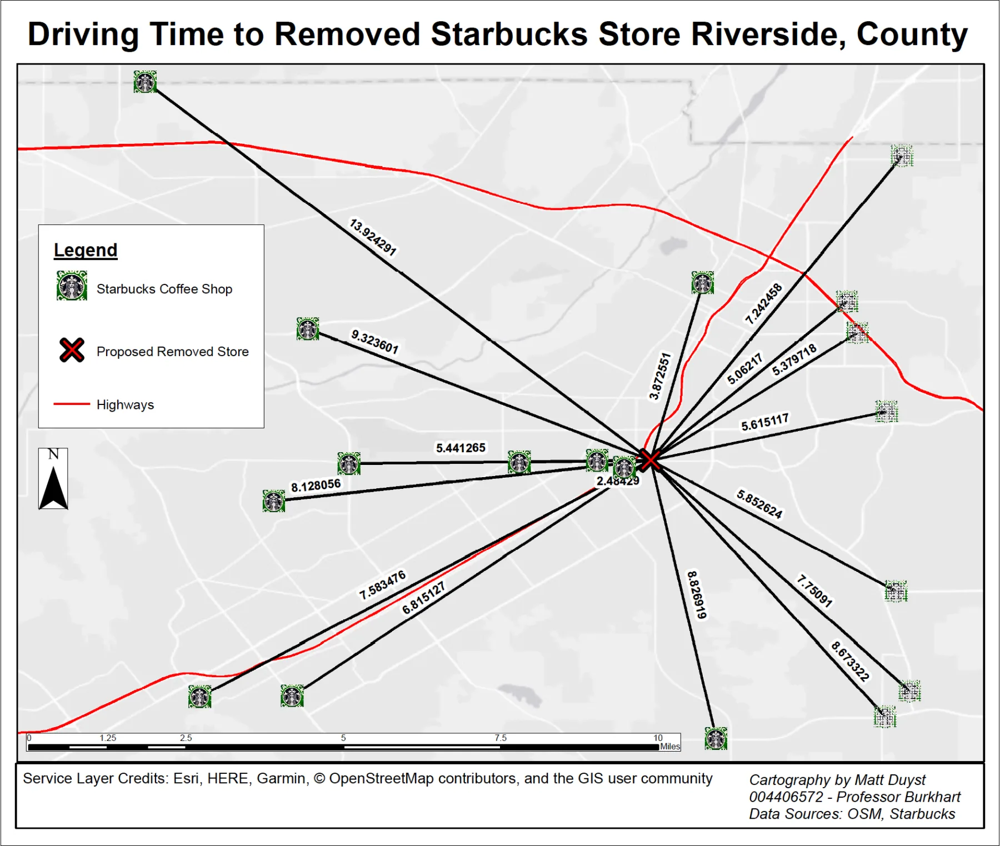
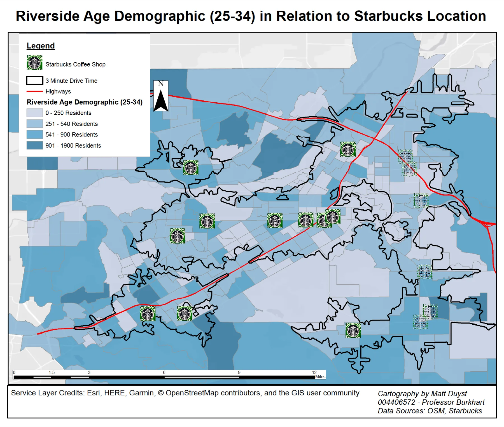
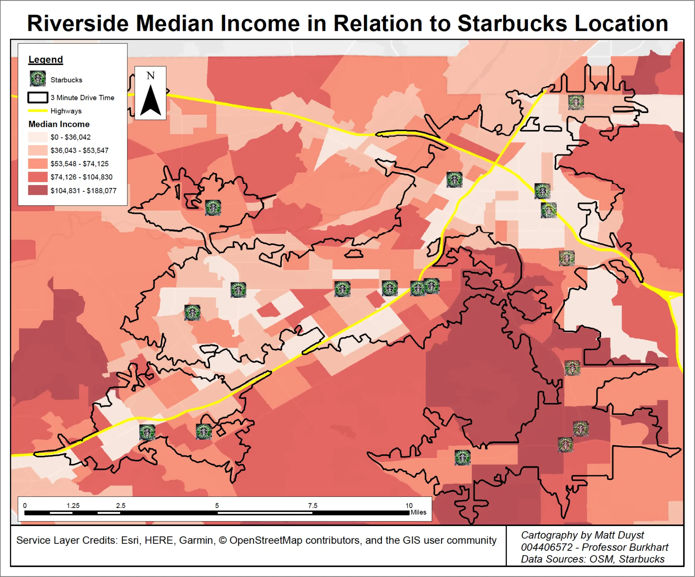
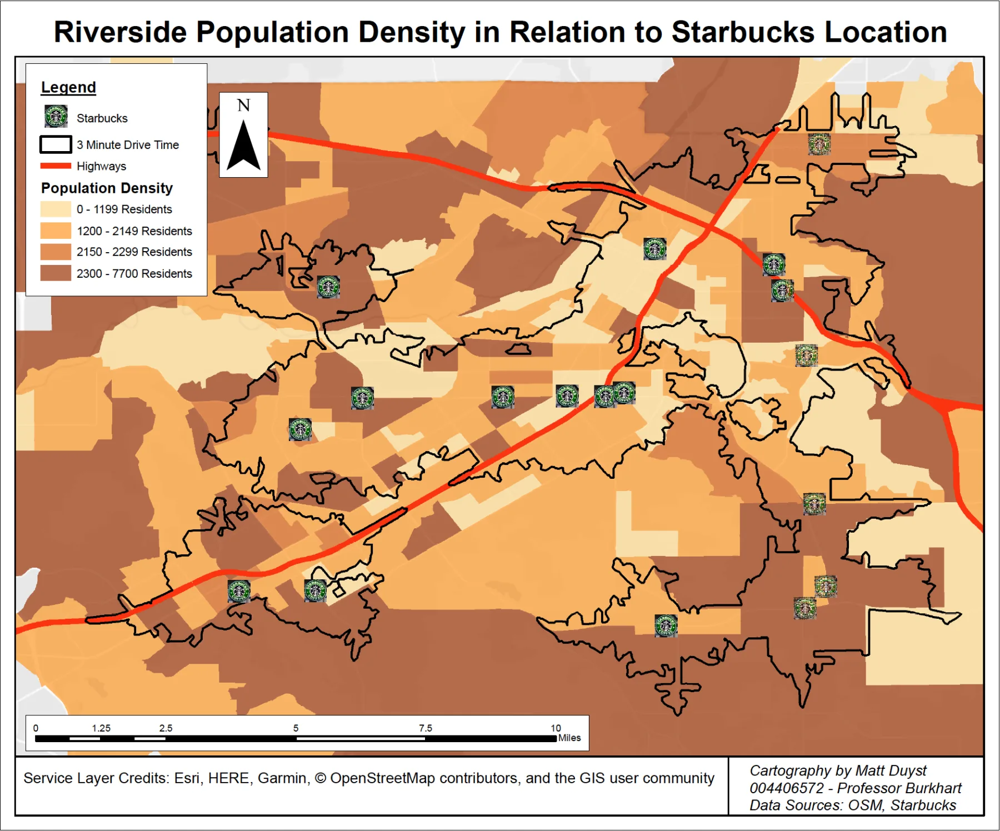

UCLA coursework, 2014 to 2020
Starbucks' Key to Success: Demographic Considerations for Ideal Store Locations in Riverside County, CA
Abstract:
This study centers around a network analysis method of market-based locations - the locations of Starbucks coffee shops in Riverside, County. Data for the store locations was obtained through OpenStreetMap. Network analysis tools were used to generate 3-minute drive time buffers between each coffee shop (Map 1). Map 2 illustrates the full use of Network Analysis Tools: to generate distance-based buffers (total drive time) between each Starbucks store, with a store recommended for closure as the origin (the Target Arlington Starbucks).
The remaining 3 maps showcase the drive time buffer joined to census block data in Riverside County, allowing for an analysis of the summation of blocks that intersect within these stores with 3 main variables: Total population density (Map 3), a targeted age demographic between the ages of 25-34 (Map 4), and the blocks’ median household income (Map 5).
Improvements could be made to Map 2 by making the 'Drive-Time' more readable; less decimals of rounded estimates and the inclusion of 'Minutes' would allow the viewer to easily understand the time it takes to drive to the proposed elimination of the Target Arlington Starbucks.
The Importance of Drive-Time: Starbucks Store Locations in Riverside County, CA

This static map illustrates a 3-minute drive time service area between each Starbucks coffee shop. However, one store was purposely covered by the legend in each map (Vons Starbucks), due to its outside placement on the border of Riverside near San Bernardino. In full, a little over 70% of Riverside’s population (472,087 people out of 593,012) fall within a 3-minute radius (drive time) of any given Starbucks coffee shop. Moreover, the highways in Riverside are depicted in red, a bright observation that allows for an interesting parallel to be made: Starbucks coffee shops are generally found off the highways, most likely as pit-stops for drivers.

This map depicts a grand use of network analysis tools: To produce buffers that correspond to an estimation of distance traveled between each Starbucks location, generated by using the proposed store for closure as the origin. These buffers (represented as black lines) correspond to the total drive time between the stores. The store with the longest drive time is the store excluded from most maps (nearly a 14-minute drive time). The largest reason for closing the Target Arlington Starbucks is its proximity to 7 other store locations, each being a less than 5-minute drive time from the store.
Understanding Your Targeted Audience: Starbucks' Demographic Analysis

The map above illustrates a nuanced range of age groups (years 25 to 34 in age), used as Starbucks’ primary consumers, along with the 3-minute drive time, store location, and the background highways of Riverside. As one would expect, the larger the concentration of individuals between this age range parallels the higher concentration of Starbucks coffee shops. In specific, blocks with a range of 250 to 900 residents have the closest proximity to a Starbucks location — the mogul's attempt to build closer to their targeted audience.

This map denotes the median household income for the residents of Riverside County, coupled with the same 3-minute drive time, the Starbucks coffee shops locations, and the outlined highways. The range is between a low of $36,042 and a high of $188,077. Although the map shows a somewhat scattered representation of the median income block data, it can be roughly stated that the Southern region of Riverside County lies within the range of $70,000 and higher, while the central and Northern region of Riverside is between $36,000 to $70,000. The service area for each given Starbucks (joined with the census block data for total population size), allows for an interesting analysis of store placement: the largest bulk of Starbucks’ buyers fall within an income of less than roughly $75,000. This map mirrors the age group generalization — blocks with larger quantities of individuals aged 25-39 are also the blocks with higher incomes and are likewise closer to a Starbucks coffee shop.

The map above is used as a general representation of understanding the Starbucks store locations desire placement, corresponding to Riverside’s total population. I decided to use the total population as the broad basis for this analysis to conjure a general and easily predicted understanding. This deviates from the earlier maps, which focused on a more nuanced representation that allowed for a more targeted analysis. The range is between 1,199 residents (the lightest shading) per block, and 7,700 per block (the darkest shading). Roughly 8 out of 11 Starbucks locations fall within a block of 2,300 residents or higher — a vast understanding to Starbucks trend of store placement. Blocks with residents of 2,300-7,700 hold the majority of Starbucks audience buyers. Starbucks conveniently placed store locations off the highways to make up for the remaining blocks with less people, ergo the blocks with less possible buyers.